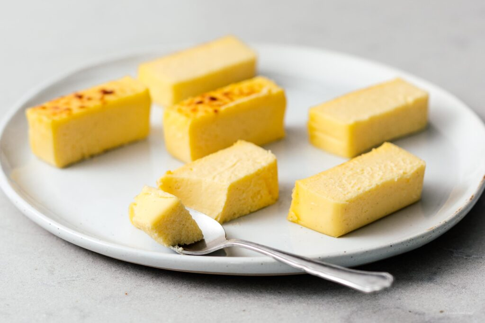

How to make the best Japanese cheesecake

INGREDIENTS
- 200 grams cream cheese room temp, about 3/4 cups
- 100 grams sugar about 1/2 cup
- 100 grams cream about 6 tbsp
- 50 grams white chocolate about 1/3 cup
- 180 grams sour cream about 3/4 cup
- 50 grams greek yogurt about 1/4 cup
- 2 egg yolks room temp
- 9 grams lemon juice about 2 tsp
- 1/4 vanilla bean optional
- 1 tsp vanilla extract
- 20 grams cornstarch about 2.5 tbsp
INSTRUCTION
- Preheat the oven to 365°F. In a bowl over a double boiler, mix together the cream cheese and sugar, stirring until the sugar is dissolved and the cream cheese is smooth. Remove and set aside to cool slightly
- In a small saucepan, heat the cream just until the edges start to bubble. Take it off the heat and add the chocolate and stir until the chocolate is melted and the mixture is smooth.
- Pour the cream and chocolate mixture into the cream cheese mixture and combine until smooth. Stir in the vanilla bean, if using.
- In another bowl, mix the sour cream and yogurt together. Mix in the egg yolk, lemon juice (if using), and vanilla extract. Whisk in the cornstarch.
- Stir the yogurt mix into the cream cheese mix, whisking until smooth. Strain through a sieve to remove any lumps (and the vanilla bean). Transfer the batter to a standard size loaf pan lined with baking paper.
- Place in a large baking dish and pour hot water into the dish to create a water bath. Bake for 25 minutes at 365°F then rotate and reduce the temp down to 300°F and bake for another 15-20 minutes. Broil slightly for a charred golden top, if desired.
- Remove the pan from the water bath and cool on a rack for 30 minutes before removing the cheesecake from the pan and chilling in the fridge to cool completely.
- Enjoy either from the fridge, frozen, or at room temp. From the fridge the cheesecake will have that classic melt in your mouth texture with a hint of vanilla and balance of sweetness. Frozen tastes a little bit like frozen custard with lemon and room temp tastes velvety and soft
GO TO RECIPEES